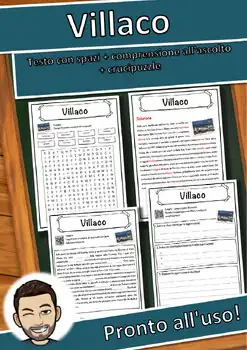
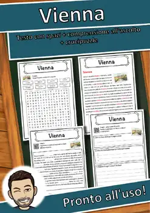
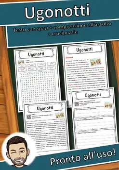
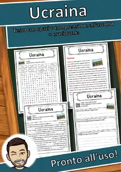
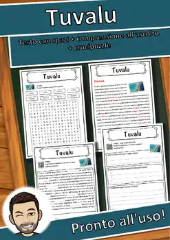
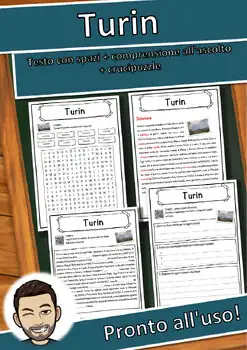

9th Grade Geography Worksheets
584 Geography resources for 9th Grade, ready to print: Łódź, Zurigo, Zimbabwe, Zambia and more. Each resource page shows the grade range, page count and a preview and links straight to the product on TpT.
584 resources

Łódź – Italian Reading Comprehension Worksheet (Scheda): Cloze & Listening

Zurigo – Italian Reading Comprehension Worksheet (Scheda): Cloze & Listening

Zimbabwe – Italian Reading Comprehension Worksheet (Scheda): Cloze & Listening

Zambia – Italian Reading Comprehension Worksheet (Scheda): Cloze & Listening

Zagabria – Italian Reading Comprehension Worksheet (Scheda): Cloze & Listening

Yeti – Italian Reading Comprehension Worksheet (Scheda): Cloze & Listening

Yemen – Italian Reading Comprehension Worksheet (Scheda): Cloze & Listening

Winterthur – Italian Reading Comprehension Worksheet (Scheda): Cloze & Listening

West – Italian Reading Comprehension Worksheet (Scheda): Cloze & Listening

Wellington – Italian Reading Comprehension Worksheet (Scheda): Cloze & Listening

Washington – Italian Reading Comprehension Worksheet (Scheda): Cloze & Listening

Warschau – Italian Reading Comprehension Worksheet (Scheda): Cloze & Listening

Waadt – Italian Reading Comprehension Worksheet (Scheda): Cloze & Listening

Vorarlberg – Italian Reading Comprehension Worksheet (Scheda): Cloze & Listening

Vilnius – Italian Reading Comprehension Worksheet (Scheda): Cloze & Listening

Villaco – Italian Reading Comprehension Worksheet (Scheda): Cloze & Listening
Vietnam – Italian Reading Comprehension Worksheet (Scheda): Cloze & Listening

Vienna – Italian Reading Comprehension Worksheet (Scheda): Cloze & Listening

Venezuela – Italian Reading Comprehension Worksheet (Scheda): Cloze & Listening

Venezia – Italian Reading Comprehension Worksheet (Scheda): Cloze & Listening

Vaticano – Italian Reading Comprehension Worksheet (Scheda): Cloze & Listening

Vanuatu – Italian Reading Comprehension Worksheet (Scheda): Cloze & Listening

Valle – Italian Reading Comprehension Worksheet (Scheda): Cloze & Listening

Valencia – Italian Reading Comprehension Worksheet (Scheda): Cloze & Listening

Valanga – Italian Reading Comprehension Worksheet (Scheda): Cloze & Listening

Vaduz – Italian Reading Comprehension Worksheet (Scheda): Cloze & Listening

Uruguay – Italian Reading Comprehension Worksheet (Scheda): Cloze & Listening
Urali – Italian Reading Comprehension Worksheet (Scheda): Cloze & Listening
Uluṟu – Italian Reading Comprehension Worksheet (Scheda): Cloze & Listening

Ugonotti – Italian Reading Comprehension Worksheet (Scheda): Cloze & Listening

Ucraina – Italian Reading Comprehension Worksheet (Scheda): Cloze & Listening

Tuvalu – Italian Reading Comprehension Worksheet (Scheda): Cloze & Listening

Turin – Italian Reading Comprehension Worksheet (Scheda): Cloze & Listening
Turchia – Italian Reading Comprehension Worksheet (Scheda): Cloze & Listening
Tunesien – Italian Reading Comprehension Worksheet (Scheda): Cloze & Listening

Troia – Italian Reading Comprehension Worksheet (Scheda): Cloze & Listening

Tram – Italian Reading Comprehension Worksheet (Scheda): Cloze & Listening

Traghetto – Italian Reading Comprehension Worksheet (Scheda): Cloze & Listening

Thailandia – Italian Reading Comprehension Worksheet (Scheda): Cloze & Listening

Toscana – Italian Reading Comprehension Worksheet (Scheda): Cloze & Listening

Toronto – Italian Reading Comprehension Worksheet (Scheda): Cloze & Listening

Tonga – Italian Reading Comprehension Worksheet (Scheda): Cloze & Listening

Tolosa – Italian Reading Comprehension Worksheet (Scheda): Cloze & Listening

Togo – Italian Reading Comprehension Worksheet (Scheda): Cloze & Listening

Tirana – Italian Reading Comprehension Worksheet (Scheda): Cloze & Listening

Timor Est – Italian Reading Comprehension Worksheet (Scheda): Cloze & Listening

Tibet – Italian Reading Comprehension Worksheet (Scheda): Cloze & Listening

Texas – Italian Reading Comprehension Worksheet (Scheda): Cloze & Listening
No resources found – try a different search term or filter.